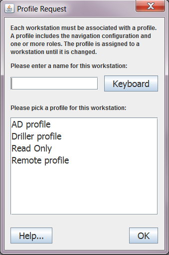
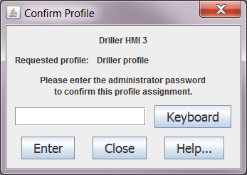
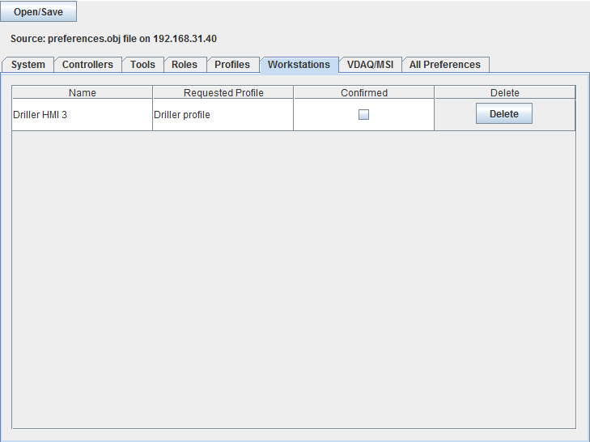
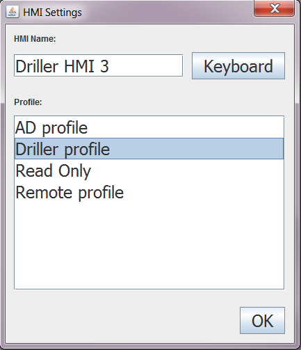
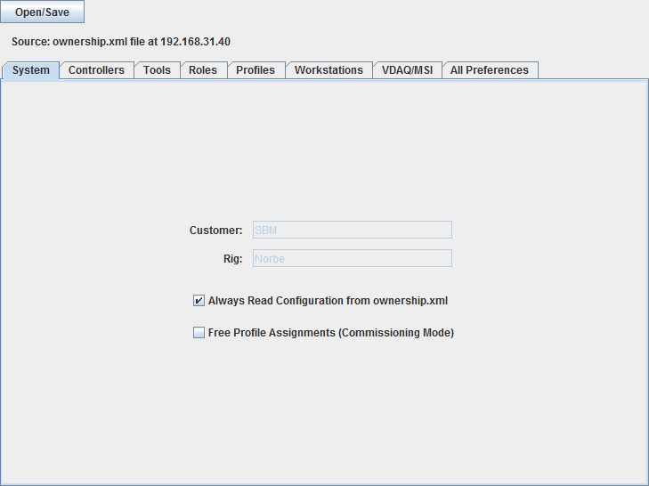
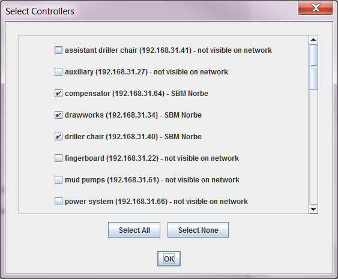
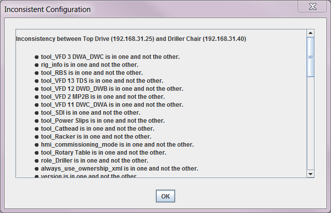

It’s fairly common in modern applications to take advantage of an operating system’s “preferences” feature. For example, if you open a word processing or spreadsheet application, it’s usually possible to find a list of recently-opened documents. That list is saved by the operating system to persistent storage, so that when you open the application again, the information is still there. Applications are designed to save common settings like colors, tool choices, unit system choices, etc. so that you only have to set these things up once and they are remembered, so that when you open the application again, the settings are already there and you don’t have to set them up again.
The Amphion preferences system works like that. It provides a way to save settings and information to persistent storage between application sessions. Starting in www 1.7.0, every time the operator screens are started up, they participate in a system that includes every controller and every other instance of the operator screens on the local network. The operator screens share information among themselves and store this information on the controllers. A bit of information—a “preference”—is nothing more than a name (a String object), an array of bytes (which could be anything), and a number that indicates some kind of “freshness”—or how recently the array of bytes was last updated. The intention of the preference system is to make sure that the most recent version of the information (the array of bytes) is kept the same between every instance of the operator screens, and is stored on every controller. If the information changes on one screen, then the change needs to be broadcast to every other operator screen and also stored on every controller. If you close down one operator display and start it back up again, the information should still be there. If you close down all the operator displays and start them back up again, that information should still be there. And that’s all that the Amphion preference system does.
We created the preference system because a specific application, the SDI system, wanted to have state information stored between operator sessions. The operator screen that looks at graphs of logged data also uses the preferences system to store its “pen sets.” It’s so that when the operator sets up the data graph to look at some set of data, and then closes the data graph, the same information will be stored and will be there the next time they open the data graph.
We use the preferences system to store system-wide configuration information. So, there is a potential problem with trying to insure that the rig configuration is the same everywhere.
The problems that we have had with the preferences system are that it doesn’t work well enough, and that it works too well. It is supposed to maintain consistency of information. So, when it doesn’t work well enough, then the information is not consistent between instances of the operator screens. When it works too well, then the information is kept consistent no matter what we do to try to change it.
One of the basic principles of the Amphion system is that it must be designed as a peer-to-peer system with no single point of failure. So, there is no single storage device (no server) where information can be stored. If we are to have a consistent set of information, then that information must be consistently stored on every controller. If one or more controllers are switched off when the others get an information update, then the information is not consistent.
The consistency among preferences has to be maintained by the operator screens (strictly speaking, the preferences system is part of the applet communications system, but the operator screens are the only part of the www that fully exercises that system).
What usually happens is that the operator screens typically get their information from a single controller (whichever controller the web browser is pointed to when it gets the operator screens page). When one screen starts up, it will read the preferences from that one controller, so which preferences you get will depend on which controller it starts up from. In www 1.7.3.2 and earlier, the preferences would be automatically sent to every controller. In www 1.7.4, it won’t automatically propagate the preferences to all the others, but still, the preferences that you get will depend on which controller it starts up from.
A more common problem is that the operator screens keep a copy of the information. If we update the information and save it to the controllers, but then the operator screens automatically write their (outdated) information down to the controllers, they will overwrite the information that we want. We have had some difficulty making sure that the information gets sent to the operator screens at the same time that we send it to the controllers. Hopefully, we have fixed this in www 1.7.4.
Still, the best way to insure that preferences are updated is to make sure the operator screens are not running anywhere, and then update the preferences.obj file in /varco/data/persistent/ on all the controllers. In the versions of www 1.7.x before 1.7.4, this can be done through the preferences configuration applet or by just replacing the actual file. In www 1.7.4, it’s better to use the preferences configuration applet, because replacing the file may not actually change anything.
Prior to www 1.7, an operator HMI was associated with an ownership group. We would specify the ownership group on an HMI by including a small text file on the machine itself, in /varco/id.txt. This file was to contain the ownership group name for that HMI.
An ownership group was specified in the ownership.xml file, which is the configuration file that specifies which tools can be owned by which ownership groups. For example, we might want the driller to be able to control the drilling tools like the top drive and drawworks, while the assistant driller might control pipe handling tools like the racker and fingerboard. So, we make an ownership group “Driller” and another “AD” which we can use to identify who gets to own what.
The ownership.xml file was originally intended to specify who gets to own what, and whether there were any ownership exclusions or enablers. An example of an ownership exclusion is that we only want the driller to operate either the drawworks or the racker, but not both, because both use the same joystick. An enabler is used when we have something like a hard-wired switch which can be used to lock out one person or another from owning a tool like the drawworks. The ownership.xml file was later expanded to specify all of the operator screen navigation options as well. And then, even later, many of the operator screen navigation options, at least for individual tools, moved into the nav_config.xml file.
The problem with the id.txt file to specify ownership groups is that we have to configure it on every HMI. If an HMI is replaced, then someone needs to go in and specially configure its id.txt file. HMIs are usually designed to run off of read-only compact flash cards, so making a permanent change like that can be difficult. Plus, it’s fairly easy to fool the system into thinking that anyone is the driller.
We realize that we needed to expand the concept of an ownership group for the sake of alarms. It has been a long-term goal to update the alarm system to allow for different people to receive different kinds of alarms. For example, a maintenance person might need to see an alarm that some piece of equipment is due for service. However, we don’t want the driller to see that alarm because it would be an unnecessary distraction. In order to manage this, we need to be able to build a concept of different roles into the system. We need to be able to tell the software that there is a maintenance role that is different from the driller role, for example, in order to direct the appropriate alarms to the appropriate people.
In www 1.7, we expanded the concept of the ownership group into the concept of a role. A role has permissions to be able to do and see various things. A role can have permission to view screens, take ownership of a tool, view alarms, etc. for individual tools. It can also have permissions that apply to the role itself, like the ability to navigate to the service pages from the operator screens and the ability to use the online Widget Editor to change screens.
In addition, the role contains permissions which control some of the options in the zone management system. For example, we sometimes want to have buttons on the zone management screen to allow the operator to take and release ownership. Sometimes, we don’t. The algorithm for figuring this out depends on how many operator chairs there are. However, the software cannot pop up a periscope and count the number of chairs it sees. It counts chairs by looking at tool names. If the chair tools are named “Driller Chair” and “AD Chair,” then we can easily determine how many chairs there are. However, if the chairs happen to be named “Driller Console” or something like that, then the software will not be able to properly count them. Counting chairs, for the software, is and error-prone process. Instead, we tried to build that into the role so that a rig designer can easily add or remove the ownership buttons on the zone management screen. It’s a similar situation with deciding whether to add lock-out and override buttons on the zone management screen: there are rules for it, but they can be fooled. We wanted some person to be able to change those options, if needed.
Plus, if we ever have a role like “Maintenance,” we probably want to be very specific about what sort of permissions we give that person.
In practice, the only roles that we use are the same ones that appear as ownership groups in the ownership.xml file: the driller, assistant driller, and remote station. However, if we are ever going to include the more comprehensive alarm system, we have to start somewhere.
We typically have two sets of tool buttons in the operator screens: one for the driller and one for the assistant driller. In practice, both menus tend to take up all of the available menu space and both contain nearly all the same tools. But, we needed to do this because we might someday need to run assistant driller’s tools from the driller’s chair, or vice versa. It makes more sense to have a button on the screen that would allow us to simply switch roles, so that if we’re in the driller’s role, we get the driller’s tools, and if we need to be the assistant driller for a while, we can switch to that role.
However, we don’t necessarily want anyone to be able to switch into any role. Some operator consoles have a line of sight to the drill floor, and some don’t. We do not want someone on a remote console to switch into the driller’s role and start moving tools around. For this reason, we also have profiles.
While a role corresponds to a person’s job, a profile corresponds to an HMI or a group of HMIs. We expect that if the driller has three HMIs, all three will have the same driller profile. This is a further expansion on the ownership group concept. A profile is allowed to take on specific roles. A driller HMI profile, for example, might be able to take on the driller or assistant driller’s role. A remote HMI profile might be able to take on a maintenance role or a “company man” role or something similar. We might like some roles to be relatively restricted and require a password in order to enter them.
Before www 1.7, we essentially assigned a profile and role (actually, an ownership group) to an HMI using the id.txt file. In www 1.7, we started to assign profiles to HMIs through a different means.
Each Ethernet adapter card has a unique identification number. In Java version 1.6, we can read this identification number and use it to uniquely identify every HMI. We can then store an association between this number and a profile name, which allows us to effectively assign a profile to every HMI.
In www 1.7.2, when the HMI started up, we would read the Ethernet identification number and pop up a dialog box to ask the operator to assign a profile to it. The dialog box was supposed to show up only once, when it was first powered up on the network, and then the setting would be remembered. It’s a relatively simple system, except that we discovered that an HMI often has more than one Ethernet adapter and we had no guarantee that we would get the same Ethernet identification number every time we started up. So, we would sometimes have an HMI coming and ask to be assigned a profile multiple times.
In www 1.7.3, we track every Ethernet identification number on an HMI and associate a profile name with the whole group so that we can more reliably remember which profile the HMI belongs to. At the same time, we gave each HMI a “name” which was simply the string of characters that corresponds to one of the Ethernet identifier numbers. These tended to be long strings with a lot of “%” signs in them and they weren’t very human-readable.
In www 1.7.4, we tried to make several improvements. First, we want to give HMIs human-readable names. When an HMI comes on the network for the first time, we need to assign it a profile and give it a name. Second, for some rather obvious security reasons, we want to make sure that not anyone can assign any profile to any computer. Third, after consulting with a friendly commissioning engineer, we created a special HMI commissioning mode, which does allow anyone to assign any profile to any computer, and to do it every time the HMI starts up, but only while the system is in that mode.
We want the HMIs to have human-readable names because of another feature that we added in www 1.7.4, which is the ability to remotely monitor the operator screens. There is a remote monitoring system which allows someone to view the operator screens (not the service pages) of essentially any HMI from a station that might be on or off the rig. In order to know what HMI we are looking at, it would be helpful if the HMIs were named something like “Driller HMI 3,” for example, instead of a string of odd characters.
In normal mode, when an HMI starts up on the network for the first time, a dialog box pops up to allow the operator to assign a profile. There is a space to input the HMI name, and a list of possible profiles to select from. An on-screen “international” (mostly European) standard keyboard is provided so that a name can be entered on a touch-screen.
Notice that there is a special profile, Read Only. This profile does not appear in any profile lists that the web browser. It is what it looks like. It allows the operator to view the tools using the operator screens, but not to write anything to the controllers. The screen navigation menu that comes with the Read Only profile will be a duplicate of the one defined for the driller profile. If there is no driller profile, then the navigation menu will be randomly determined.
Because we don’t want anyone to be able to assign any profile to any HMI (workstation), the dialog above allows the operator to request a profile. But there is another step. The profile request needs to be confirmed. If the profile is not confirmed, then it will be read-only. Again, this is in normal mode, not HMI commissioning mode.
After the operator presses the OK button, the dialog to confirm the profile pops up.
To confirm the profile, the appropriate password (ProfileAdmin) needs to be entered in the text field. Once the profile is confirmed, it will be associated with the HMI automatically from that point on. The dialog boxes should not appear again.
Once the profile is requested, the association between the profile and the HMI is saved to the preferences system, but as an unconfirmed profile. If we don’t know the password, we can just close the Confirm Profile dialog and we will be allowed to see the operator screens using the requested profile, but we will not be able to write to any controller with it. This is how we prevent just anyone from plugging a laptop into the rig network and becoming the driller.
The read-only profile is automatically confirmed, and the confirmation dialog will not pop up.
There is an alternate way to confirm a profile. In the preferences configuration applet, available from a link on the main service page, the Workstation tab includes a check-box that allows us to confirm the profile.
After we put a check mark in the check-box we need to save the configuration to the controllers so that it can be remembered the next time we start up the HMI.
This screen is also where we can remove profiles that aren’t confirmed or that are no longer relevant (like the laptop of a rig technician who has left the rig, for example).
In HMI commissioning mode, things are a little different. A slightly different dialog pops up, but for the same purpose.
In HMI commissioning mode, this dialog always pops up, whenever the HMI comes on the network. This is because we understand that commissioning engineers like to swap HMIs from one position to another, and like to be able to use any HMI to accomplish any task. In HMI commissioning mode, whatever profile is selected becomes the confirmed profile for that HMI until it is changed. The confirmation dialog will not pop up. Once we leave HMI commissioning mode, the assignments that we last had will be the ones that are remembered by the system.
HMI commissioning mode is the default, so when www 1.7.4 is first installed, it will be in HMI commissioning mode until a commissioning engineer switches it off. To switch HMI commissioning mode on or off, there is a check box on the System tab of the preferences configuration applet.
Even though the new configuration system allows us to make some interesting changes in how rig software is configured, no one has really used it. In fact, the “preferences” system tends to be very unpopular. In www 1.7.4 we are introducing an alternative, which is to allow the rig software to use the ownership.xml file. In this mode, no “preferences” need to be configured. The system will build its configuration by reading the ownership.xml file every time the operator screens start up, as it did before www 1.7. In fact, in www 1.7.4, this is the default mode. We can switch this mode on and off using a check box on the system tab of the preferences configuration applet.
In www 1.7.x versions before 1.7.4, it worked reasonably well to edit the preferences.obj file with the offline editor and then copy the file to the /varco/data/persistent/ directory on all the controllers. With www 1.7.4, this might not work as well.
We have had cases where the preferences file seems to get corrupted. We don’t know how this happens, but in an effort to prevent it, we have included a “Preferences” servlet in www 1.7.4. This servlet acts as a buffer between the preferences.obj file and the outside world. It reads the file and stores a copy of its contents internally. When an applet asks for the preferences, the information comes from the servlet’s internal storage, not from the preferences.obj file itself. Also, when preference changes are written to the controller, they are written to the internal storage on the Preferences servlet, which can then write the changes to the preferences.obj file when it has time. This should prevent multiple applets from trying to write to the preferences.obj file at the same time. In theory, this should prevent corruption by preventing multiple sources from accessing the file at the same time.
What this means is that the best way to install preferences in www 1.7.4 is to open the online preferences configuration applet, load or edit any preferences file that you like (it has a lot more options, including the ability to load from a specific controller or from a file on a laptop), and then use that to save to the network. And although it’s less likely that there will be a problem with HMIs writing their version to the network at the same time, it is still recommended that we turn off all the HMIs while changing the preferences file, if this is possible.
When you save to the network from the preferences configuration applet, a dialog appears asking you to confirm the controller addresses to write to. The problem that this tries to address is that when the preferences configuration applet starts up, it tries to find controllers on the network to write to. However, this process takes time. If we start up the preferences configuration applet, change a single check box (for example), and then try to write preferences to the network, the applet may not have had time to find all the controllers on the network. It will only write to the controllers that it knows are available, and these may not be all the controllers.
When this dialog pops up, take a moment to look at the controllers that it thinks are available. If there are some that you know are online, but it doesn’t, then check the box next to that controller to get it to write to that address.
Also, the preference configuration applet gets the list of controllers on the network from the preferences or from the ownership.xml file. This list may be inaccurate. If there are controllers on the network that are not listed in the preferences of ownership.xml file, then the preferences configuration applet may not know about them at all. Check the list when it comes up. If there are controllers missing, then you may need to use a second menu item in the preferences configuration applet that allows you to write to specific IP addresses.
Never write preferences to a VDAQ or MSI controller because those controllers use an earlier www and they will not understand.
Also, in www 1.7.4 we have eliminated most of the processes that automatically write configuration data to the preferences system. In www versions earlier than 1.7.4, the operator screens would periodically write preference data to all controllers, which made the information difficult to control. In www 1.7.4, this should never happen. The only time the configuration is written to any controller is when the operator specifically asks for it or authorizes it.
In www 1.7.4, we also have integrity and consistency checks for preferences. The integrity check tries to read preferences from the raw byte data. If it fails, then the operator should get a dialog box to let them know and the preference data will go no farther into the system. The system will not try to load corrupt preferences.
In HMI commissioning mode, when the operator screens are started up, the system will wait for a full minute, and then read the preferences from various controllers and compare them to each other. If any inconsistencies are found, it will show a dialog box to let the operator know. This will not appear in normal operating mode.
